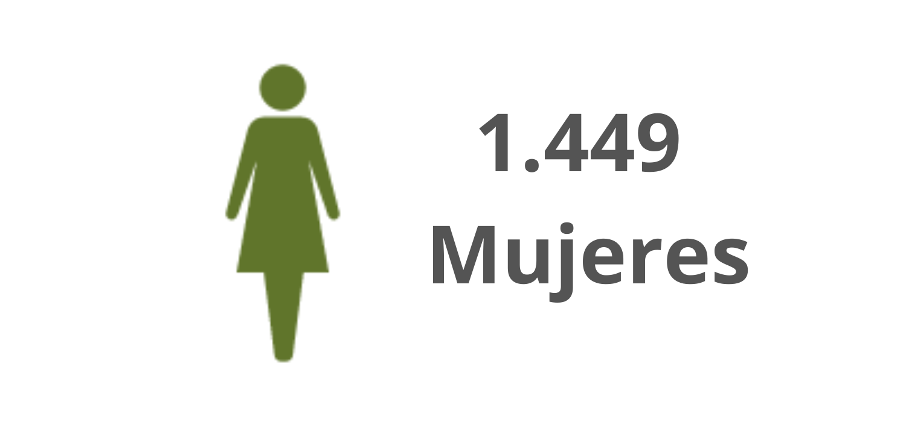
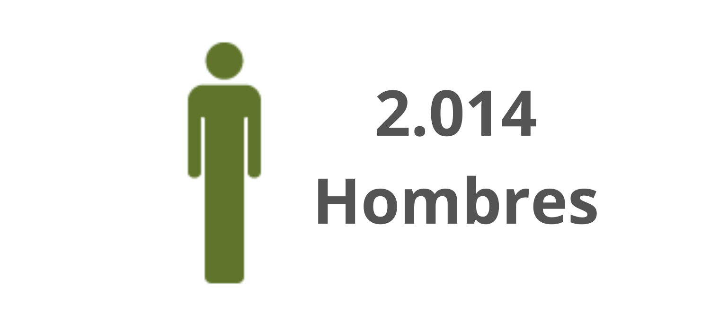

¿Cuál es la percepción de los actores del Parque Nacional sobre la problemática de las basuras?
yo todo lo boto en la bolsa negra porque si uno separa de todas maneras llega el camión y revuelve todo
Carmen, vendedora en caseta del Parque Nacional
ellos las rompen y nosotras tenemos que recoger ese reguero al otro día
Argumenta que aunque ella deje las bolsas dispuestas para que el camión las recoja, en la noche a veces no pasa a tiempo y los habitantes de calle las rompen.
¿Cuántas personas asistieron a la estrategia?
Número de asistentes desde las 8 am hasta las 5 pm

Número de mujeres asistentes

Número de hombres asistentes
¿Cuáles aspectos se deberían tener en cuenta para mejorar la problemática de las basuras en el Parque Nacional?
El tamaño de las canecas podría ser mayor y además deberían estar diferenciadas por colores para la adecuada separación de residuos.
Debería haber una oportuna recogida de escombros porque hay presencia de los mismos y no se evidencia su adecuada gestión.
Algunas bolsas que dejan cerradas los (as vendedores (as) son abiertas en ocasiones por recicladores (as) o habitantes de calle, aunque
la presencia de estos últimos actores no es tan frecuente.
Aunque el servicio de aseo es bueno y constante y en general el parque permanece libre de basuras dispersas, debe reforzar la adecuada
separación y recolección de los residuos.